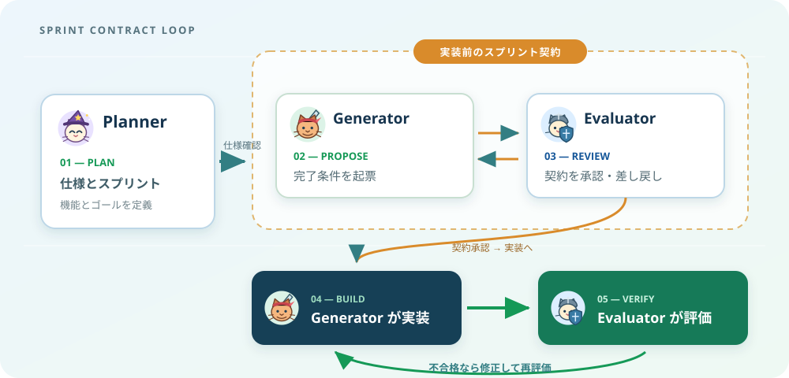

harness-agent-loop
短い要求からアプリケーションを設計・実装・評価するための開発ハーネスです。Claude Code と Codex のどちらからも使えます。

3つの役割
Planner が要求を整理し、製品仕様書とスプリント計画を作成します。
Generator が完了条件を起票し、Evaluator の承認後に機能と UI を実装します。
実装後は Evaluator がアプリを操作して品質を評価します。問題が見つかると結果を Generator に返し、修正と再評価を繰り返します。各役割の実行方法は利用環境に合わせます。
設計の出典：Anthropic — Harness design for long-running application development